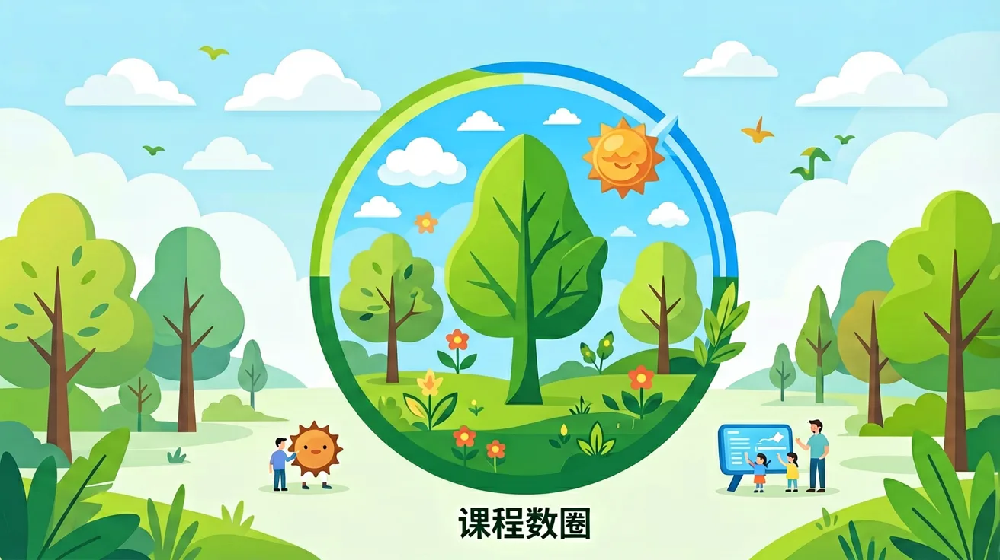
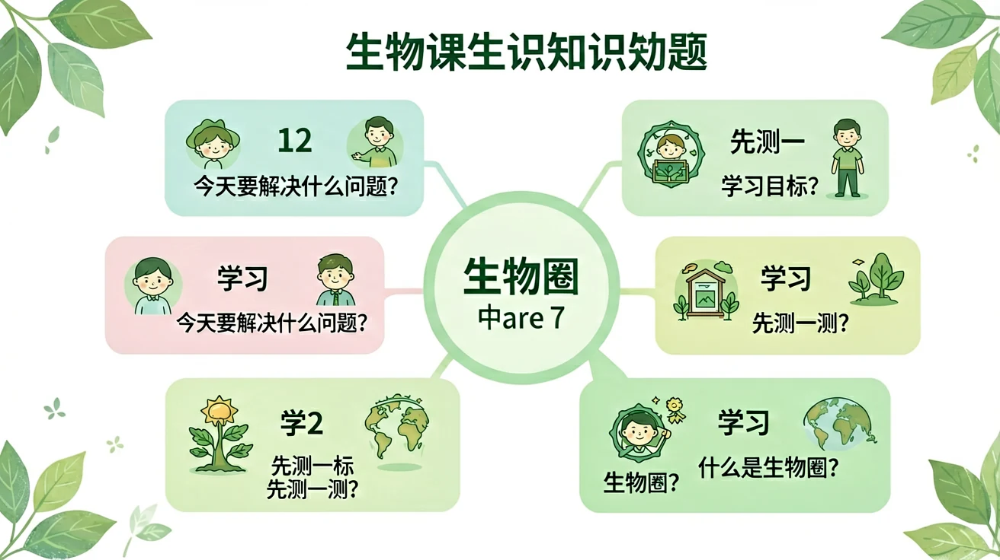

Interactive Canvas
生物圈层归属：拖放生物到正确圈层
将生物拖到它主要生活的圈层位置
点击生物图标，将其拖到对应圈层（大气圈/水圈/岩石圈）
地球上所有生物与其生存环境构成的统一整体——生物圈，是地球上最大的生态系统，也是所有生物共同的家园。


选一个你关心的问题
选择或输入后，本课围绕你的问题展开。
生物圈包括哪些范围？
地球上所有生物与其生存环境构成的统一整体叫做生物圈。它是地球上最大的生态系统，也是最高层次的生命系统。生物圈不是生物的简单集合，而是生物与环境相互作用、相互依存的有机整体。
但是：地球那么大，生物到底生活在哪些地方？生物圈的边界在哪里？
所以：学习生物圈——理解所有生命共同生活的这个"大家庭"的范围和特点
地球上所有生物与其生存环境构成的统一整体。包含所有生态系统，是地球上最大、最高层次的生态系统。
所有生物（动物植物微生物）+ 非生物环境（阳光、水、空气、土壤等）= 统一整体
最大的生态系统、自我调节能力最强、各部分相互联系、物质循环和能量流动贯穿其中
生物圈的范围以海平面为基准，向上可达大气圈底部约10千米处（对流层），向下深入岩石圈地表以下约2~3千米处以及水圈的全部深度约11千米（马里亚纳海沟）。整个生物圈的厚度大约为20千米。但绝大多数生物集中分布在地面以上约100米到水面以下约200米的范围内，这是因为该区域光照、温度、水分等条件最适合生物生存。
以氮气和氧气为主。底部约10千米（对流层）有生物分布。能飞翔的鸟类和昆虫、微小的细菌和真菌孢子都可在此生存活动。
包括全部海洋和江河湖泊。几乎到处都有生物分布，从浅海珊瑚到万米深海热泉口的嗜热菌，水圈是绝大多数生物的摇篮。
一切陆生生物的立足点。土壤中有大量微生物、蚯蚓等土壤动物，地表有各类植物和动物，是人类活动的主要场所。
生物圈之所以适合生物生存，是因为它能持续稳定地提供生命所需的各种条件。没有这些条件，生命就无法维持。科学家在寻找外星生命时，首先关注的就是星球能否提供类似的条件。这六大条件相互配合，缺一不可，共同构成了生物赖以生存的环境基础。
几乎所有生态系统的能量来源，植物光合作用的驱动力，维持地球温度。
生物体的重要组成成分，代谢反应的溶剂和参与者，占人体体重约60%-70%。
提供O₂和CO₂，动物呼吸需要氧气，植物光合作用需要二氧化碳。
生物体内酶活性受温度影响，大多数生物适宜温度在-30℃~50℃之间。
维持生命活动的物质基础，包括无机盐和有机物，来自食物或土壤。
生物活动、繁殖所需的领域范围，不同物种对空间需求差异很大。
虽然生物圈可以分为大气圈、水圈、岩石圈三个部分，但这三者并不是彼此独立的。它们相互交叉、相互影响，共同构成一个不可分割的统一整体。例如，森林中的大树根系深入岩石圈（土壤），树冠伸入大气圈，而树体内含有大量的水分属于水圈的一部分。候鸟在大气圈中飞行迁徙，在岩石圈上筑巢繁殖，在水圈中捕食鱼虾。一条河流的污染可以通过食物链影响整个流域的生物，最终通过大气循环影响远处的生态系统。这都说明生物圈各部分之间紧密联系、互为整体。任何一个生态系统都不是孤立存在的，所有生态系统共同组成了生物圈这个最大的整体。
将生物拖到它主要生活的圈层位置
错：生物圈就是指所有生物的集合（生物圈层）
对：生物圈 = 所有生物 + 生存环境，比生物圈层范围更大
错：大气圈、水圈、岩石圈三个部分互不相关
对：三圈相互交叉渗透，生物往往跨圈层活动
错：海底太深太暗所以没有任何生物
对：深海热泉口有丰富的微生物和动物群落
填空：生物圈包括____底部、____和____表面。
解释为什么说"生物圈是一个统一的整体"？举例说明。
火星上能否形成生物圈？分析火星环境缺少哪些关键条件。
下列关于生物圈的说法中，正确的是？
生物圈是地球上最大的生态系统，是所有生命的共同家园。
生物圈是指地球上所有生命体及其生存环境的总和，包括大气圈下层、水圈和岩石圈上层。其垂直范围从海平面以下约11千米的深海沟到海平面以上约10千米的高空。例如，喜马拉雅山脉的雪线以上仍有耐寒植物生存，而马里亚纳海沟的极端环境中也存在嗜压微生物。生物圈的核心特点是具备维持生命的基本条件：液态水、适宜温度和能量来源。值得注意的是，国际空间站虽然有人类活动，但因依赖地球补给，不属于独立生物圈。
碳循环是生物圈最典型的物质循环过程。绿色植物通过光合作用固定大气中的二氧化碳，转化为有机物；动物通过摄食获取碳元素；分解者将有机物分解回归环境。例如，一棵橡树每年可吸收约21千克二氧化碳，而亚马逊雨林被称为'地球之肺'。氮循环则通过固氮细菌（如豆科植物根瘤菌）将大气氮转化为生物可利用形式。人类活动如化石燃料燃烧已使碳循环速度加快30%，这可能导致温室效应加剧。理解这些循环对维持生态平衡至关重要。
生态系统中能量沿食物链单向流动并逐级递减，形成能量金字塔。例如在草原生态系统中：太阳能→草（生产者）→羚羊（初级消费者）→狮子（次级消费者），每个营养级只能传递约10%的能量。若一片草场年产100万千卡能量，狮群最终只能获得约1000千卡。这种规律解释了为什么顶级捕食者数量稀少。特殊情况下存在倒金字塔，如英吉利海峡浮游生物快速更替，但其生物量瞬时测量可能小于鱼类。人类农业通过缩短食物链（如直接种植谷物）提高能量利用效率。
生物圈可划分为多个功能层：大气层（传播花粉、供氧）、水层（覆盖71%地表，含深海热泉生态系统）、陆地层（包含土壤微生物群落）。以红树林为例，其树冠层栖息鸟类，树干有藤壶，根部养育鱼苗，淤泥中含硫细菌，完美展示垂直分层。不同海拔也形成明显带谱：云南高黎贡山从山脚热带雨林（25℃）到山顶高山草甸（-15℃）仅相距40公里。人类建造的立体农场模仿这种分层，如新加坡的'天空蔬菜'种植系统。理解分层有助于保护生物多样性热点区域。
生物圈包含许多极端环境生态系统：美国黄石国家公园的温泉（80℃以上）生存着嗜热菌，其DNA修复酶被用于PCR技术；南极干谷极度干旱的土壤中仍有缓步动物（水熊虫）可休眠数十年；太平洋海底黑烟囱周围化能自养细菌构成特殊食物链。这些生物具有特殊适应机制：耐辐射奇球菌能承受15000Gy辐射（人类500Gy即致命），其原理正在被研究用于航天防护。实验室已成功模拟部分极端环境，如日本'深海6500'项目培育了深海微生物群落。
工业革命以来人类已成为改变生物圈的重要力量。正面案例包括：都江堰水利工程维持成都平原生态2000多年；荷兰围海造田形成新湿地生态系统。负面影响更显著：巴西橡胶种植导致雨林碎片化，使美洲豹种群基因多样性下降30%；地中海沿岸建筑使海龟产卵地减少60%。当前全球物种灭绝速率是背景值的1000倍。我国三北防护林工程证明人类可以主动修复生态，该项目已使北京沙尘暴天数从2000年的13天降至2020年的2天。
1991-1993年美国进行的生物圈二号实验试图构建微型封闭生态系统。这个1.28公顷的玻璃建筑包含雨林、沙漠等5个生物群落。实验出现意外：混凝土墙吸收二氧化碳导致浓度波动（从380ppm降至260ppm）；授粉昆虫灭绝导致植物繁殖困难；微生物分解速度超出预期。尽管未能实现完全自给，但该实验证实了生态系统的脆弱性。现代生态建筑吸取其教训：迪拜'可持续城'采用开放式设计，通过智能电网与外部能源互补，居民人均能耗比传统社区低40%。
联合国教科文组织的人与生物圈计划（MAB）在全球建立714个生物圈保护区（2023年数据），我国有34个入选。长白山保护区实行核心区（禁止人类活动）、缓冲区（科研监测）、过渡区（可持续利用）三级管理模式。非洲跨境保护区如卡万戈-赞比西保护区覆盖5国，保护大象迁徙走廊。公民科学项目如eBird通过公众上传的8200万条观鸟记录，帮助科学家追踪候鸟路线变化。《生物多样性公约》2022年通过的'30×30'目标，计划到2030年保护30%陆地和海洋面积。
['你能否列举三个不同海拔高度的典型生态系统？', "为什么说'能量金字塔'通常是上小下大的形状？"]
['若某个湖泊被化肥污染导致藻类暴发，请预测能量金字塔可能发生的变化', '比较自然生态系统与城市生态系统的物质循环差异']
常见误区是认为生物圈各层界限分明。错因在于忽视过渡带的存在，如红树林既是陆地也是海洋生态系统。诊断时应强调生态交错带（ecotone）通常具有更高生物多样性。另一个误区是低估微生物作用，实际上土壤中1克可能含100万细菌，它们驱动着关键物质循环。
设计一个校园微型生物圈模型，要求包含：(1)至少3个营养级；(2)物质循环演示装置；(3)能量流动测量方法。分析你的设计中如何体现生物圈各组分间的相互依存关系。